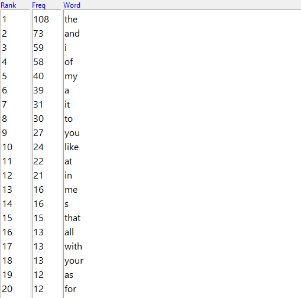
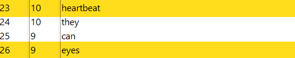
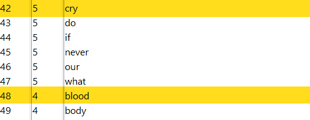
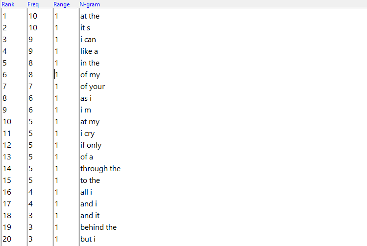
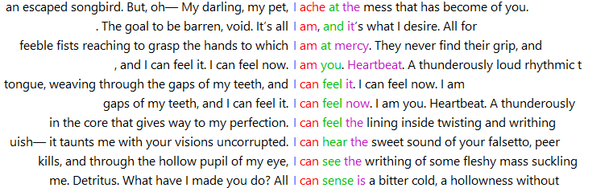
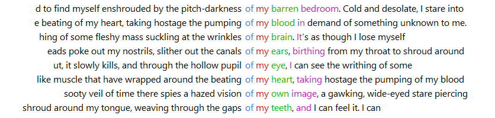

Network displaying the connections between the topics/keywords and related poems by tile.
My top 10 most-used words!
Hmmm... Not super enlightening. That's what word counts tend to look like, and it's why's they're not very useful in isolation. The most insightful piece of information that we can gather from this is something I mentioned in a blog post as I was first conducting this kind of analysis: I tend to use the words "I" and "me" a LOT in my works. Makes sense, given that most of my poems are written from my own point of view!
But, if we scroll down just a bit, we'll find a few more interesting entries:
 That's more like it! We can see some more intriguing words I tend to use a lot in my poems like: heartbeat, eyes, cry, and blood! How fun.
To get a better context for these word counts, we can use N-Grams.
N-Grams are continous sections of text (usually a few words in a sequence) that can be very illuminating in text analysis, as they reveal what phrases/combinations of words are most common in a work.
My top 20 N-Grams are:
Unlike with word counts, we can already see some interesting patterns. First there's "like a," my 4th most common N-Gram, obviously an product of the fact that this is poetry, thus heavy on the metaphors and similies.
To make this analysis even more illuminating, we can bring in confordence plots, which will show us even more text that surrounds these N-Grams/words.
Taking a closer look at the concordence plot for "I" to get a better understand how exactly it gets used most frequently:
Instead of focusing on action (I do, I think, I go), my writing tends to skew towards emotion and sensation (I ache, I can feel/sense/see/hear).
We can use concordence plots of simimlar N-Grams ("of my" and "of your") to see if there's any contrast between them:
